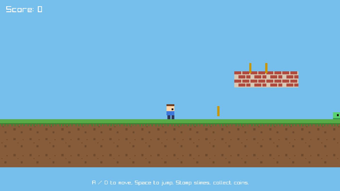
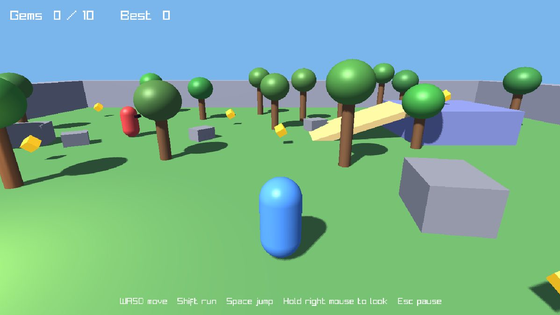
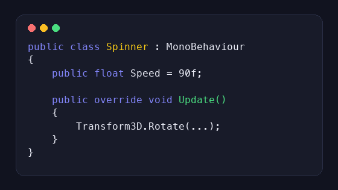
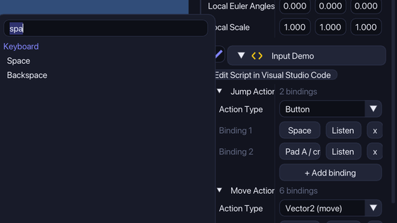

Learn Strata
Step by step guides with pictures. Start with your first game, then learn scripts, input and effects.

Your first 2D game
Make a 2D platformer in Strata from a template, press Play, then change the player and add coins and an enemy.

Your first 3D game
Start from the 3D Adventure template in Strata: walk around, collect gems, change the sun and add a guard.

Write your first script
Write a C# script in Strata, add it to an object, show a value in the Inspector and make a cube spin and move.

Input Actions
Use InputAction fields in Strata scripts: add bindings in the Inspector, search for a key or press Listen, and remap inputs in Project Settings.
Fire, smoke and sparkles
Add particle effects in Strata: fire, smoke, sparkles and explosions, with presets and a live preview, and start bursts from a script.
More guides are coming. You can open this page from the editor too: Help › Learn: open the guides, or from Strata Hub: Learn.